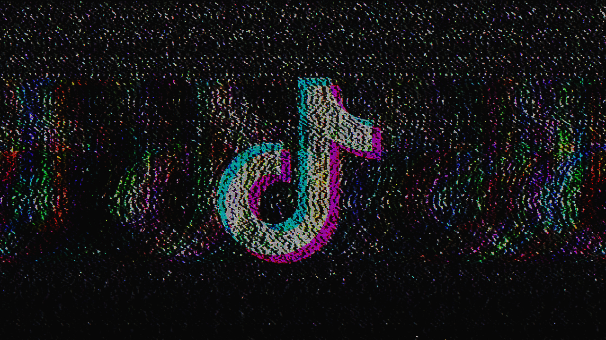

Glitch Art
This project is a series of glitched images using TextEdit, Audacity Software and Photoshop.
My glitched Art pieces focuses on addictive social media applications. it includes glitched logos of each platform to show flaw and vulnerability.
Mediums Used: TextEdit, Audacity, Photoshop
